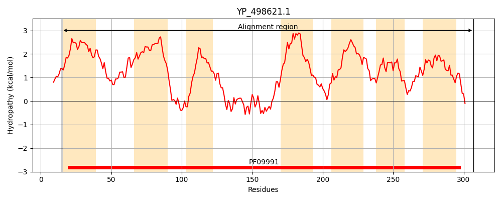
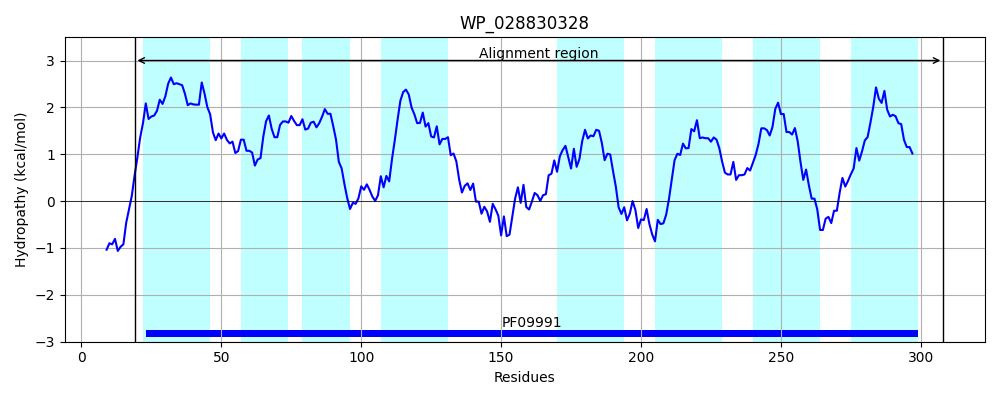
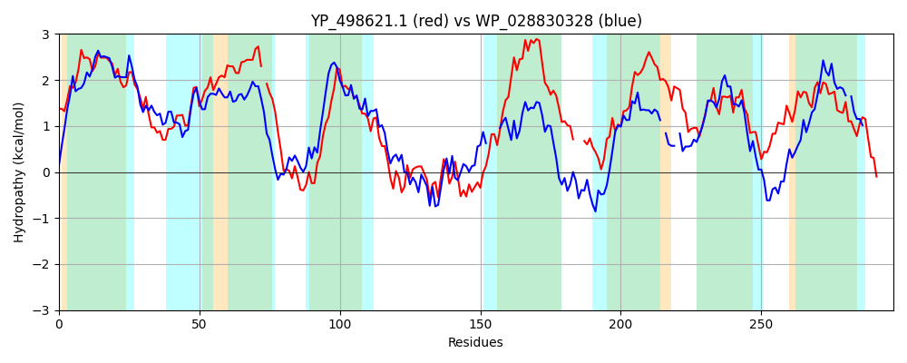

Hit Accession: WP_028830328
Hit TCID: 9.B.263.2.3
Hit Description: gnl|BL_ORD_ID|20994 gnl|TC-DB|WP_028830328|9.B.263.2.3 DUF2232 domain-containing protein [Proteocatella sphenisci]
Mach Len: 297
e:0.000000
Query TMS Count : 7
Hit TMS Count: 8
TMS-Overlap Score: 7.500000
Predicted Substrates:None
BLAST Alignment:
Score: 164 , Bit scores: 67 bits, E-value: 5.7e-13, Alignment length: 297, Percentage identity: 22
Query: 15 TIIATIALVFVALALYLVPGLGLIFALFATIPGIVLWNKSIQSFGISALITVIITTVLGNTFVLSAIILVLIA-SLIIGQLLKERTSKERILYVTTVAMSLISLIAFMLLQTFGRIPPSASIVKPFKQTLHEAITMSGADANMTQILEEGFRQATVQLPGFIIIITFLIVLINLIVTFPILRKF---KIATPVFKPLFAWQMSGILLWIYIIVIICLLFTGQPSVFQSILLNFQLVLSLVMYIQGLSVIHFFGKAKGLPNAVTILLLVIGTILTPTTHIVGLLGVIDLSLNLKRIMK 307
TI TI +V + + + LVP L L +I I+ + + IS+LIT + +V V+ + + +IIG+L + ++ ++L L+ + ++ I+ ++++ T G D ++ L R PG ++ + F I IN +T IL + K + + + + G +L IY++ ++ L +T + ++++LN ++ ++ ++QGL+ I+ F + P ++ +++ T++ T +V +G +D +NL+R+ K
Sbjct: 19 TIKYTILVVMLLVMIRLVPLFSLAAVLLPSILAIITYRNGMALSFISSLITALSASVFMEPLVVIYMAFTVGGVGMIIGELSYRKRKPALAIFAGAFMVTLNILLLMFAEASMLKVDLLDYIINIYRESFEIQKTTMGLDMDVDTFLLNLRRT----FPGMVVCMGFAISSINYFLTGTILTRITKRKEMSSLSEFTLPGNVFGGMLIIYLMTVM-LNYT-EFIYKETLILNLTIIFGMLFFLQGLASINNFMSKRLRPFPRNVITVILCTVMPLYTFVVA-IGFVDAIMNLRRLKK 308 | Protein Hydropathy Plots: |
|---|
|  |  |
Pairwise Alignment-Hydropathy Plot:
|
|---|
|  |